Winkel zwischen zwei Geraden
- 1. Allgemeiner Fall:
- Sind die Geraden durch die Gleichungen
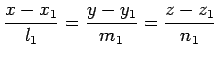 und 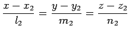 oder vektoriell durch
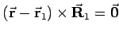 und 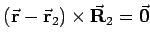 gegeben, dann wird der Winkel gemäß
mit 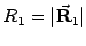 und 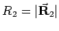 berechnet.
- 2. Parallelitätsbedingung:
- Die Parallelitätsbedingung für zwei Geraden lautet:
- 3. Orthogonalitätsbedingung:
- Die Orthogonalitätsbedingung für zwei Geraden lautet:
Winkel zwischen einer Geraden und einer Ebene
- Gleichungen:
- Sind die Gerade und die Ebene gegeben durch die Gleichungen 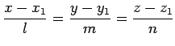 bzw. Ax + By + Cz + D = 0 oder vektoriell durch 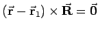 bzw. 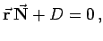 dann wird der Winkel zu
mit 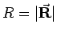 und 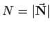 berechnet.
- Parallelitätsbedingung:
- Die Parallelitätsbedingung für eine Gerade und eine Ebene lautet:
- Orthogonalitätsbedingung:
- Die Ortogonalitätsbedingung für eine Gerade und eine Ebene lautet: